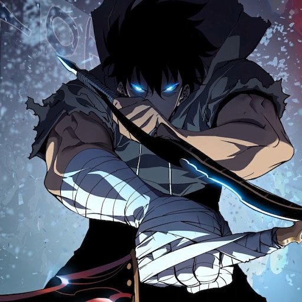
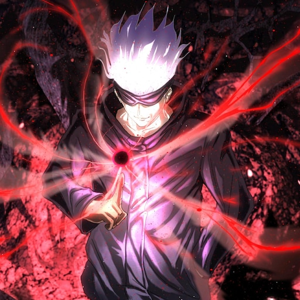
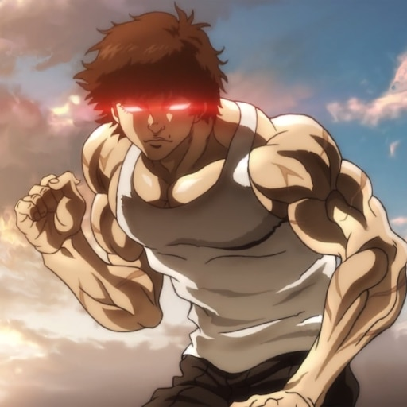
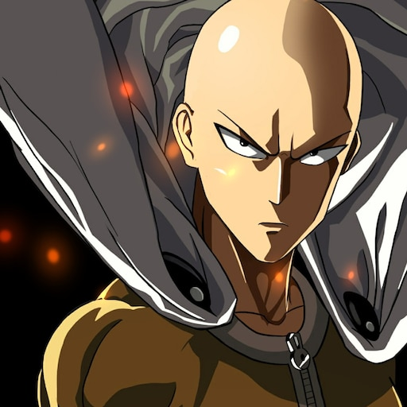
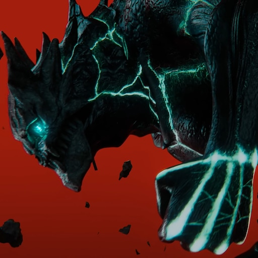
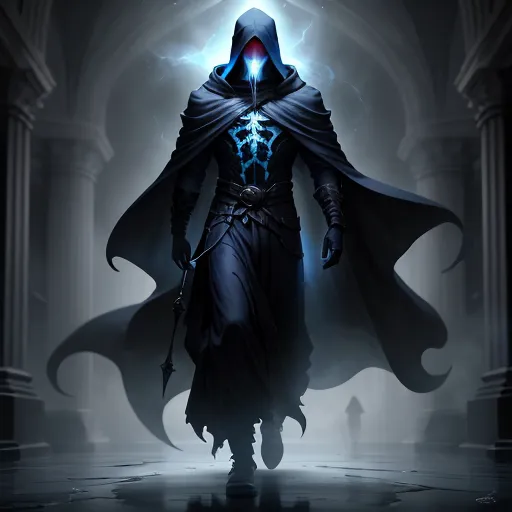

Solo Leveling
Solo Leveling follows the journey of Sung Jin-Woo, a low-ranking
hunter in a world filled with deadly monsters. After a near-fatal
encounter in a mysterious dungeon, he gains a unique ability that
allows him to level up in strength and skill. As he battles
formidable foes and uncovers dark secrets, Jin-Woo evolves into
the most powerful hunter of his time. This thrilling tale combines
intense action with rich character development, captivating fans
of the genre. Join Jin-Woo as he navigates challenges and
discovers his true potential.

Jujutsu Kaisen
Jujutsu Kaisen centers around Yuji Itadori, a high school student
who becomes entangled in the world of curses after ingesting a
powerful cursed object. To save his friends and fight against
malevolent spirits, he joins the Jujutsu Sorcerers, a group
dedicated to exorcising curses. Alongside skilled sorcerers like
Megumi Fushiguro and Nobara Kugisaki, Yuji learns to harness his
newfound abilities. The series masterfully blends action, horror,
and humor, exploring themes of friendship and sacrifice. Dive into
the thrilling battles and dark mysteries of the Jujutsu world!
Bleach
Bleach follows Ichigo Kurosaki, a teenager with the ability to see
ghosts, who becomes a Soul Reaper after accidentally obtaining
powers from Rukia Kuchiki. Tasked with protecting the living from
evil spirits known as Hollows, Ichigo navigates the dangerous
world of Soul Society and its complex politics. As he battles
formidable foes and unravels the mysteries of his own powers,
Ichigo grows stronger alongside his friends. The series is
renowned for its dynamic action, rich lore, and compelling
character development. Join Ichigo on his journey as he defends
both the living and the spiritual realms!

Baki
Baki the Grappler follows Baki Hanma, a young martial artist
determined to surpass his legendary father, Yujiro Hanma, known as
the "strongest creature on Earth." In his quest for strength, Baki
faces a series of formidable opponents, each with unique fighting
styles and extraordinary abilities. The series showcases intense
battles, exploring themes of perseverance, rivalry, and the
pursuit of greatness. As Baki hones his skills, he navigates the
brutal world of underground fighting. Join him on his journey to
prove himself and become the ultimate warrior!
Your Talent is mine
Your Talent is Mine follows the story of a talented but
unremarkable student, who unexpectedly gains the ability to absorb
the skills and talents of others. As he navigates a world where
strength and skill are everything, he becomes a formidable
contender in various competitions. With each absorbed talent, he
transforms from an underdog to a powerhouse, challenging the
status quo. The series blends action, strategy, and personal
growth, highlighting the value of determination and adaptability.
Join him on his journey as he strives to master his newfound
powers and carve out his own destiny!

One Punch Man
One Punch Man follows Saitama, an unassuming hero who can defeat
any opponent with a single punch. Despite his overwhelming power,
he struggles with boredom and the lack of recognition in a world
filled with monstrous threats. As he seeks genuine challenges and
a sense of purpose, Saitama encounters a diverse cast of heroes
and villains. The series brilliantly combines action, comedy, and
satire, poking fun at typical superhero tropes. Join Saitama on
his quest for excitement as he navigates a world where the
strongest hero often goes unnoticed!

Kaiju N 8
Kaiju No. 8 follows Kafka Hibino, a man whose dream of joining the
Japan Defense Force to fight monstrous kaiju takes an unexpected
turn. After a chance encounter with a kaiju, he gains the ability
to transform into one himself, giving him immense power. As Kafka
navigates his dual life, he faces the challenges of both fighting
alongside his comrades and controlling his monstrous side. The
series blends action, humor, and themes of perseverance,
showcasing the struggle to protect humanity while embracing one’s
true self. Join Kafka on his thrilling journey as he fights
against overwhelming odds!

Nigromante
Necromancer: I Am the Plague follows the story of a powerful
necromancer who seeks revenge in a world where dark magic reigns.
After facing betrayal and death, he is reborn with the ability to
control the undead and unleash devastating plagues upon his
enemies. As he navigates the treacherous landscape filled with
formidable foes and rival sorcerers, he aims to reclaim his lost
power and exact vengeance. The series explores themes of
resurrection, power struggles, and the consequences of wielding
dark magic. Join him on his quest as he transforms from a fallen
hero to a fearsome force of chaos!